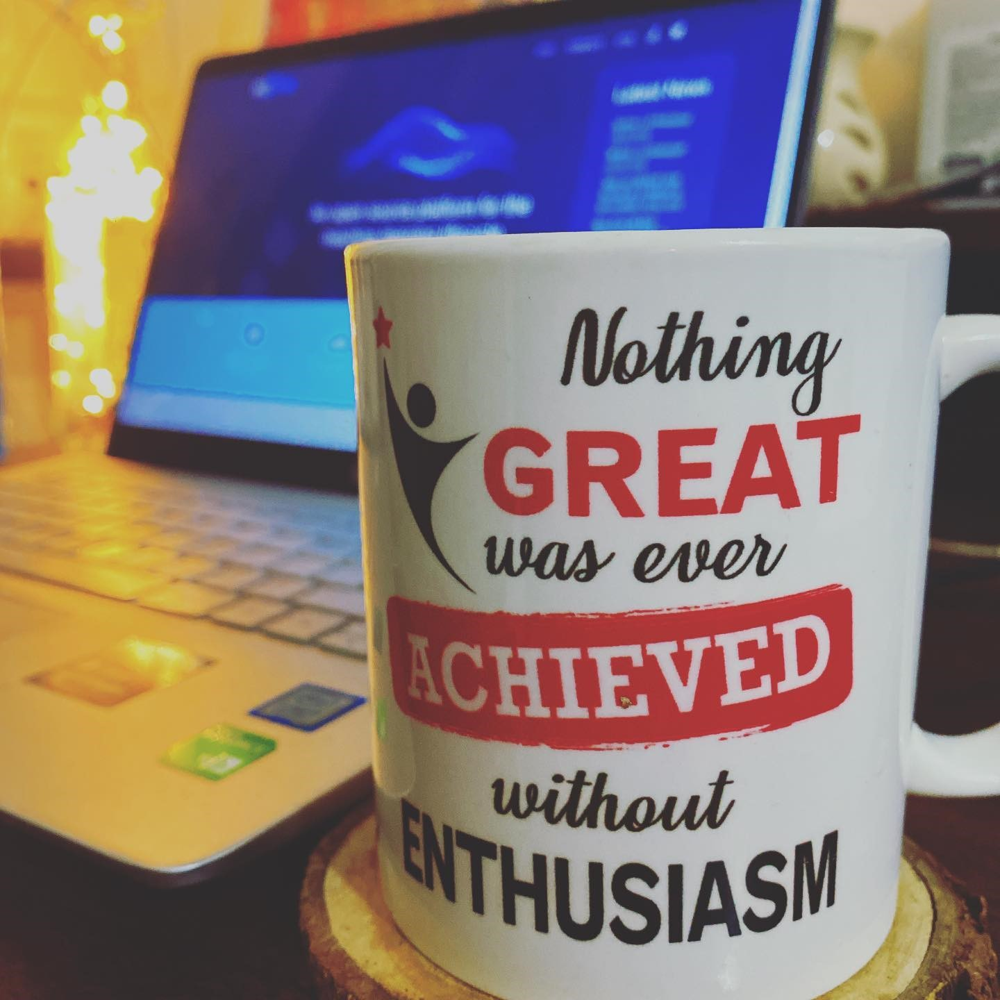

Intro

I ❤️ Technology,
Collaborative and Passionate Computer Science Engineer.
• Software Engineering has always fascinated me right from my academic years. What has always intrigued me is how Code can be converted into valuable Softwares with a magic sauce of algorithms.
• Accomplished Tutorials/courses related to Java, Backend Development & developing my skills by participating in various Seminars and events.
• Looking for good projects where I can explore my knowledge and bring data-driven insights and produce optimal solutions to the real world problems.
• There's nothing better than using your problem solving skills and making better decisions with Code.
• Key Skills: Java, SQL, Spring, Spring Boot, RestAPI, MicroServices, Backend Development.
• I believe that "Constant Learning, Experimenting & Determination" are the main keys to be successful.
--
" Trust the Wait, Embrace the Uncertainity. "
--
My Portfolio : https://Kamesh-Mishra.github.io/
My Github Profile: https://github.com/Kamesh-Mishra
My LinkedIN: https://www.linkedin.com/in/kameshmishra/
My Resume: https://bit.ly/2Xvi9x2
Projects

PROJECTS
1. Online-Shoping-Project
Backend RESTful API for an online shopping system built with Spring Boot, focusing on clean architecture, database integration, and API best practices.
Key highlights of the project include:
• 🔧Developed a RESTful backend for an online shopping platform using Spring Boot, enabling user registration, product management, order handling, and cart functionalities.
• 🧱Designed a layered architecture (Controller-Service-Repository) and implemented DTOs with ModelMapper to separate internal data models from API contracts.
• 🗄️Integrated MySQL with Spring Data JPA for robust and efficient database interactions.
• ⚠️Implemented comprehensive error handling with custom exceptions and global exception handler for consistent API responses.
• 📦Managed project dependencies and build lifecycle using Maven, following industry-standard practices for scalability and maintainability.
• 🔐Secured API endpoints using JWT-based authentication with Spring Security, ensuring stateless session handling and role-based access control.
• 🧪Used Postman for endpoint testing and automated request validation with Spring's @Valid annotations.
• 📚Documented all REST endpoints using Swagger, enabling interactive API exploration and developer onboarding.
See Project
2. Hotel-Rating-Microservices-App
A distributed, production-ready microservices project designed for real-world deployment, featuring service discovery, centralized config, secure API communication, and full observability through Zipkin tracing.
Key highlights of the project include:
• 🏢 Engineered a scalable microservices architecture with distinct services (User, Hotel, Rating), allowing independent development and deployment.
• 🌐 Set up API Gateway using Spring Cloud Gateway for unified routing, request filtering, and service exposure.
• 🔍 Enabled dynamic service discovery using Spring Cloud Netflix Eureka, improving resilience and scalability across microservices.
• 🗃 Used centralized configuration by Spring Cloud Config Server to externalize and manage environment-specific configs across all services.
• 💾 Managed persistence with MySQL, using Spring Data JPA to handle database operations efficiently with clean repository abstraction.
• 📮 Enabled RESTful communication between services using FeignClient, promoting decoupled and maintainable service interactions.
• ⚠️ Developed robust error and exception handling, including custom exceptions, for improved API reliability.
• 📊 Integrate distributed tracing using Zipkin for end-to-end request monitoring across services.
See Project
3. Movie-Stream-Microservices-App
Built a cloud-native, microservices-based movie streaming and catalog platform using Spring Boot and Spring Cloud with secure API communication, and full observability through Zipkin tracing.
Key highlights of the project include:
• 🧱 Developed independent services for Movie Catalog and Movie Streaming, each with its own MySQL database and RESTful APIs.
• 🚪 Built an API Gateway using Spring Cloud Gateway to centralize routing and request filtering, with global CORS configuration to expose microservice endpoints for browser-based clients.
• 🔍 Enabled dynamic service discovery using Spring Cloud Netflix Eureka, enhancing resilience and scalability across microservices.
• ⚙️ Configured a centralized configuration server using Spring Cloud Server for runtime configuration management across microservices, improving consistency and deployment flexibility.
• 🔁 Enabled inter-service communication using load-balanced RestTemplate, and added structured logging using Logger for real-time debugging and monitoring.
• 📡 Integrated Zipkin for distributed tracing, enabling end-to-end visibility of request flows across services and facilitating performance monitoring.
• 🌐 Included a simple HTML web client (auto-generated using ChatGPT) to demonstrate complete end-to-end functionality and validate API contracts in a browser environment.
See Project
4. Kafka-SpringBoot-producer-consumer-Application
See Project
5. Weather-Application-Redis-Cashing-SpringBoot
See Project
Contact Me
I am available on almost every social media.
You can message me, I will reply within 24 hours.
I can help you with Java, Spring Boot, RestAPI, MicroServices and Development.
Elements
i = 0;
while (!deck.isInOrder()) {
print 'Iteration ' + i;
deck.shuffle();
i++;
}
print 'It took ' + i + ' iterations to sort the deck.';